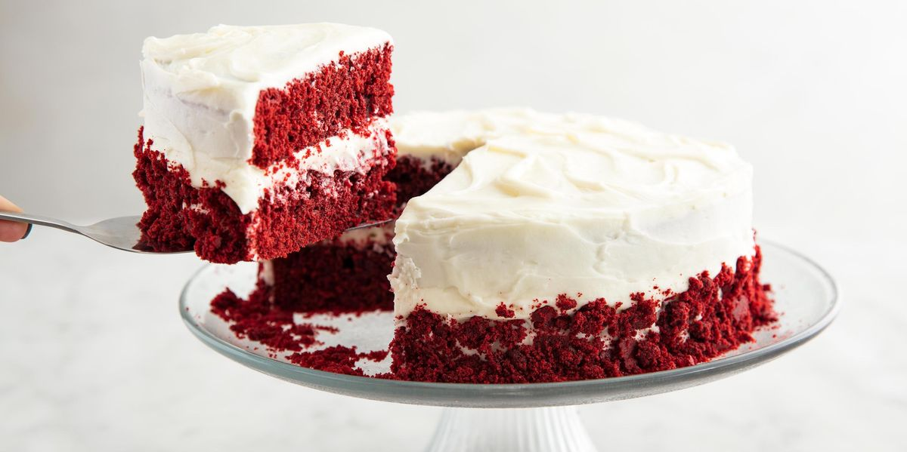

Best Red Velvet Cake
This is my favorite recipe! it's incredibly delicious and easy to make.
Caution if you make this recipe can become your favorite birthday cake.

Ingredients
- 1/2 cup butter, softened.
- 1-1/2 cups sugar.
- 2 eggs, room temperature.
- 2 bottles (1 ounce each) red food coloring.
- 1 tablespoon white vinegar.
- 1 teaspoon vanilla extract.
- 2-1/4 cups cake flour.
- 2 tablespoons baking cocoa.
- 1 teaspoon baking soda.
- 1 teaspoon salt.
- 1 cup buttermilk.
Frosting
- 1 tablespoon cornstarch.
- 1/2 cup cold water.
- 2 cups butter, softened.
- 2 teaspoons vanilla extract.
- 3-1/2 cups confectioners' sugar.
Directions
- Preheat oven to 350 degrees F (175 degrees C). Beat the butter and sugar until light and fluffy.
Add the eggs, one at a time, beating well after each addition. Stir in the food coloring, vinegar, and vanilla.
In another bowl, mix together the flour, cocoa, baking soda, and salt; Add to creamy mixture alternately with buttermilk,
beating well after each addition.
- Pour the mixture into baking pans. Greased and floured. Bake then insert a toothpick in the center and check that it comes out clean,
20-25 minutes. Allow layers to cool for 10 minutes before removing from the baking pans.
- For frosting, combine water and cornstarch in a small saucepan over medium heat. Stir until thickened and opaque, 2-3 minutes.
Cool to room temperature. Beat butter and vanilla until light and fluffy. Beat in cornstarch mixture. Gradually add confectioners' sugar; beat until light and fluffy.
Spread between layers and over top and sides of cake.
Nutrition Facts
Per Serving:
1 slice: 595 calories; 34g fat (21g saturated fat), 115mg cholesterol, 564mg sodium, 71g carbohydrate (52g sugars, 1g fiber), 4g protein.
Credits: visit this website to see the recipe!